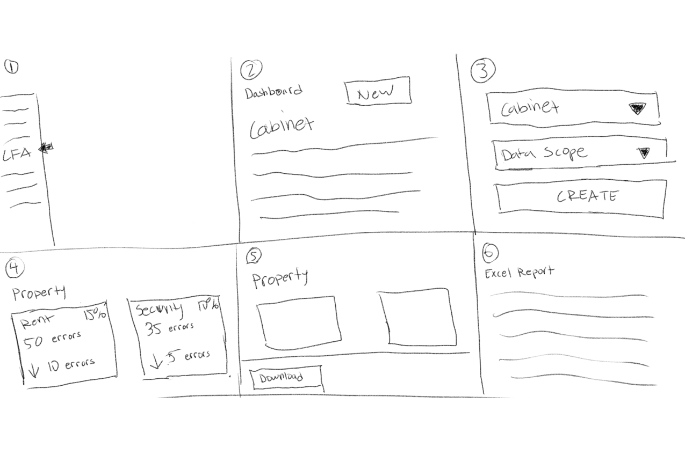

Valence Docs - Lease File Audits

Lease File Audits are painful and time consuming
Property management companies initiated Lease File Audits by manually looking at each lease and comparing it to the information they have with their PM software. This process took a lot of time and effort that required multiple employees. User errors were common when lease file audits were done manually.
Going from idea to results
I planned and facilitated a design sprint with Developers, sales, support, and upper management. We started the day by asking questions we wanted to solve. We keep these questions in mind to answer during the sprint.
What was our long-term goal?
We were looking for a solution to simplify the process. Instead of assigning manual file reviews that took days, we wanted Lease File Audits to do the heavy lifting. As a team, we decide that the core functionality would be to compare existing data within the Property Management System to the data within Blue Moon lease documents, finding discrepancies in everything from simple name misspellings to security deposits, rent amounts and more.
What is considered success?
- Lease File Audits would be widely used and bring in more revenue from current users
- Instead of it being a multi day process, our feature would shorten the process to minutes
- This feature would help us sell our software to new users
- Lease File Audits would provide inaccurate data, making the feature useless
- This feature would be hard and confusing to use
What is considered failure?
Mapping out the MVP workflow

We mapped out the workflow on how Lease File Audits would work.
Sketching out ideas
The team sketched out ideas of dashboard and workflow to be presented to team. We placed stickers on ideas we thought were best.
Storyboarding the solution
Once we finished choosing which idea was best, we decided to storyboard the idea to prototype and test with clients
Testing and Feedback
I prototyped the feature in HTML / CSS / JS.
Cards
Snapshots of each audit that showed number of errors, how well it performed vs previous audit, and how much the category counted toward the amount of overall errors
Graph

Graphs of the 5 most popular audits and the history of each audit
Data Table

Data table highlighting non matches, along with the ability to sort, search and scroll
Screens